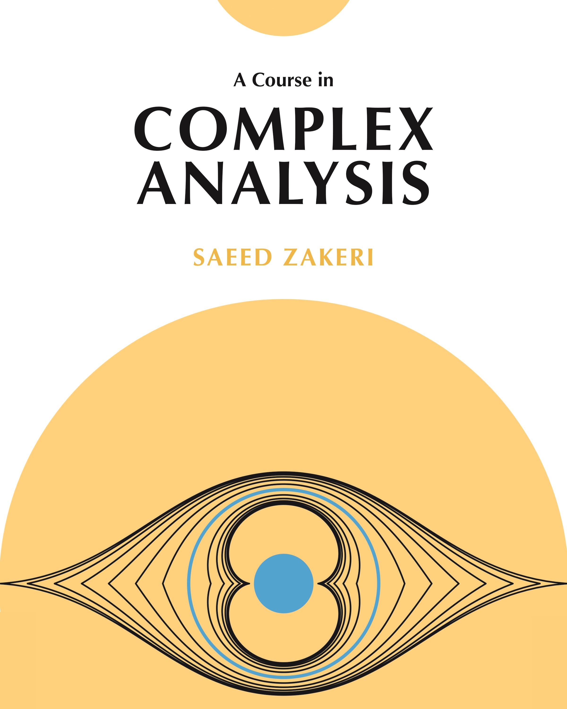

|  |
A Course in
|
|
"This is a delightful book on complex analysis with a nice geometrical/topological flavor. It provides good foundations in the classical theory, and presents beautiful bridges between complex analysis and related subjects, such as topology and real analysis, as well as connections to more advanced topics, including Riemann surfaces and several complex variables."
"This wonderful book on complex analysis will certainly become a reference. In his masterful treatment of the subject, Zakeri balances the geometric and analytic viewpoints. The inclusion of recent developments and a wealth of historical notes makes the text even more attractive. I wish I had A Course in Complex Analysis when I was a student."
"Aimed at beginning graduate students, this book presents a streamlined and geometric approach to many of the highlights of complex analysis. Each chapter includes numerous examples, historical notes, attractive figures, and a wide range of interesting exercises. The breadth of material covered makes A Course in Complex Analysis an attractive addition to every mathematician’s library."
"The writing is clear and unfussy with a strong narrative thrust and constant concern for the needs of an independent reader meeting the material for the first time. But experts will also find much to admire in the author's exemplary organisation of results and choice of proofs... I have reviewed books in the Gazette for nearly 40 years and none has given me greater pleasure than this one. Beautifully produced, beautifully written, on an incomparably beautiful area of mathematics, this is an inspirational book that I shall gratefully return to again and again."
"This is a graduate-level introduction to complex function theory. The author’s elegant writing style, and interesting selection of topics, sets this book apart from the competition and makes it a good choice for a reference, or a textbook for a fairly sophisticated (one or two semester) graduate course."
"Careful, consistent, and clear, this comprehensive textbook covers all the main topics of classical complex analysis and does so in admirable detail. The quality of the exposition and the breadth of material sets it apart. A lot of thought has gone into this book and any student of analysis will find it helpful."
"Filled with interesting problems, A Course in Complex Analysis is a substantial textbook. Zakeri has invested a huge effort in its construction and arrangement and there is much to admire." | |
From the PublisherA Course in Complex Analysis explores a central branch of mathematical analysis, with broad applications in mathematics and other fields such as physics and engineering. Ideally designed for a year-long graduate course on complex analysis and based on nearly twenty years of classroom lectures, this modern and comprehensive textbook is equally suited for independent study or as a reference for more experienced scholars. Saeed Zakeri guides the reader through a journey that highlights the topological and geometric themes of complex analysis and provides a solid foundation for more advanced studies, particularly in Riemann surfaces, conformal geometry, and dynamics. He presents all the main topics of classical theory in great depth and blends them seamlessly with many elegant developments that are not commonly found in textbooks at this level. They include the dynamics of Möbius transformations, Schlicht functions and distortion theorems, boundary behavior of conformal and harmonic maps, analytic arcs and the general reflection principle, Hausdorff dimension and holomorphic removability, a multifaceted approach to the theorems of Picard and Montel, Zalcman’s rescaling theorem, conformal metrics and Ahlfors’s generalization of the Schwarz lemma, holomorphic branched coverings, geometry of the modular group, and the uniformization theorem for spherical domains. Written with exceptional clarity and insightful style, A Course in Complex Analysis is accessible to beginning graduate students and advanced undergraduates with some background knowledge of analysis and topology. Zakeri includes more than 350 problems, with problem sets at the end of each chapter, along with numerous carefully selected examples. This well-organized and richly illustrated book is peppered throughout with marginal notes of historical and expository value. Presenting a wealth of material in a single volume, A Course in Complex Analysis will be a valuable resource for students and working mathematicians.
| |